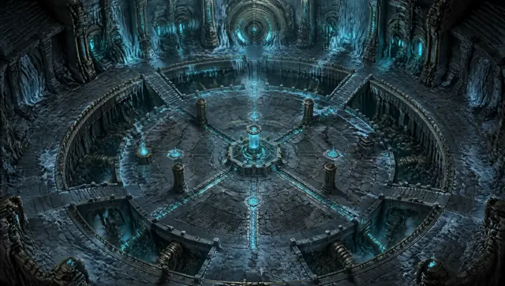

Navigate
Four worlds, one maker.
Each space is built in its own language — pick a thread and pull.
01 — Visual
Art & Imagen
Ink-and-watercolor portraits, character-consistency studies, and the occasional cursed meme.
Enter the gallery →
02 — Sound
Music
Industrial, synthwave, and the sacred-profane. Eight tracks you can play right here.
Open the player →
03 — Technical
Projects
An award-winning Unity game, a 90%+ melanoma CNN, and shipped web apps.
See the build log →
04 — Literary
Canrael & Writing
A seven-year dark-fantasy world — the Abyss, the Lighthouses, and the knights who break.
Descend →